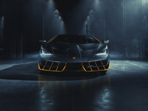

|  |
Lamborghini Centenario
|
The Lamborghini Centenario is a limited-edition high-performance supercar produced by the Italian automaker Lamborghini. It was first introduced in 2016 to celebrate the 100th birthday of the company's founder, Ferruccio Lamborghini, and only 40 units were produced, 20 coupes and 20 roadsters, each of which was sold for a reported price of over $2 million.
The Centenario features a mid-engine layout and is powered by a naturally aspirated 6.5-liter V12 engine, which produces 770 horsepower and 507 lb-ft of torque. It is mated to a seven-speed automated manual transmission and Lamborghini's all-wheel-drive system.
The Centenario is built using advanced lightweight materials, including carbon fiber and other composites, which helps to reduce its weight and improve its performance. It has a top speed of 217 mph and a 0 to 60 mph time of just 2.8 seconds.
The Centenario's exterior design is characterized by sharp angles, aggressive styling, and aerodynamic features that are inspired by Lamborghini's racing heritage. The interior is also designed to be futuristic and high-tech, with a driver-focused layout, carbon fiber accents, and a state-of-the-art infotainment system.
The Centenario was designed to be a track-focused supercar that is optimized for speed and performance. It is not intended for use on public roads and was primarily sold to collectors and enthusiasts who wanted a rare and exclusive Lamborghini.
Overall, the Lamborghini Centenario is a unique and impressive supercar that showcases Lamborghini's advanced engineering and design capabilities. It is considered to be one of the most exclusive and expensive cars ever produced by Lamborghini, and its rarity and performance make it highly sought-after among collectors and automotive enthusiasts.